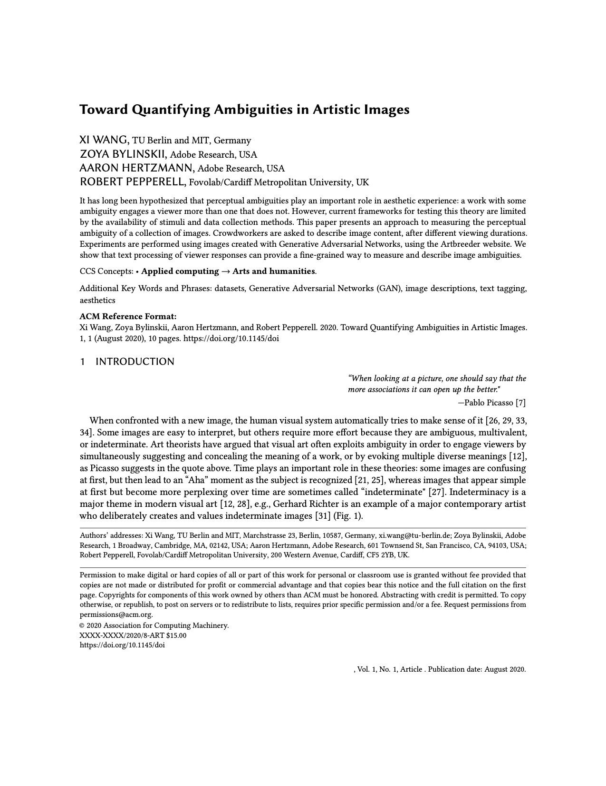

Abstract
It has long been hypothesized that perceptual ambiguities play an important role in aesthetic experience: a work with some ambiguity engages a viewer more than one that does not. However, current frameworks for testing this theory are limited by the availability of stimuli and data collection methods. This paper presents an approach to measuring the perceptual ambiguity of a collection of images. Crowdworkers are asked to describe image content, after different viewing durations. Experiments are performed using images created with Generative Adversarial Networks, using the Artbreeder website. We show that text processing of viewer responses can provide a fine-grained way to measure and describe image ambiguities.
Paper

Xi Wang, Zoya Bylinskii, Aaron Hertzmann, and Robert Pepperell.
Toward Quantifying Ambiguities in Artistic Images.
ACM Trans. Appl. Percept. (September 2020), 10 pages.
Special issue for ACM Symposium on Applied Perception (SAP) papers.
Paper
ArXiv preprint
BibtexCode: GitHub
Human Visual Perception of Art as Computation, talk by Aaron Hertzmann
See Aaron's talk on related topics. Details of this project starts from 17:45.
Poster Presentation at VSS 2021
Poster
Poster walk-through
Link to
Acknowledgments
We thank Aude Oliva for feedback and support for this project and for hosting X.W. as a visiting student, and Joel Simon for providing data from Artbreeder. All stimuli are public domain imagery obtained from Artbreeder, created by the following users. Figure 2: guidoheinze, kent4747; Figure 3: jakritger, caincaser, strangecircus; Figure 4: desleep, jeffgiddens, thunderdog, angrytree607, portjos, strangecircus; Figure 5: jakritger, happyemil, thelindamartinez06; Figure 7: thunderdog, desleep, spihut, telmaroza.